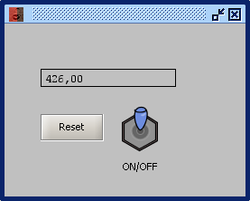
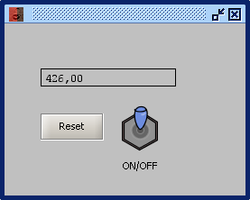
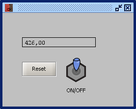

ELEMENTO: SUBPANEL VM
Con este objeto podemos invocar la apertura de una aplicacion (subcircuito). Cada una de las entradas y salidas de estos subcircuitos aperceran en ellos y podran conectarse con otros bloques operadores y/o subcircuitos..
En el ejemplo cada boton invoca a un subcircuito.
